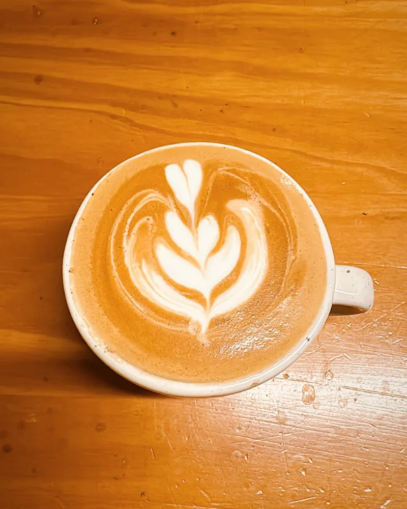
8:00
Café de especialidad
Flat white, filtrados en V60 o Chemex y el ¼ kg para llevarte a casa.
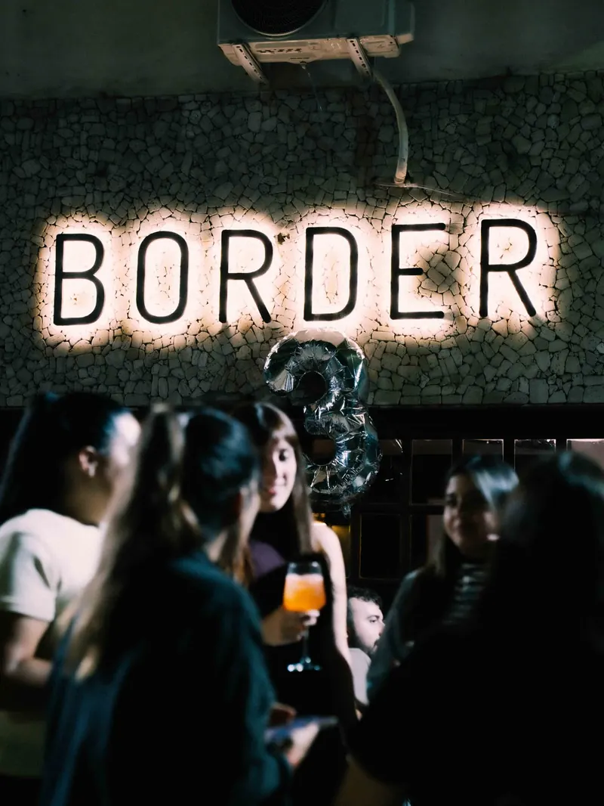
Sanabria 4302 · Villa Devoto
En la esquina de Sanabria y Habana. Entrás por un ratito y te quedás hasta cerrar.
De 8 de la mañana a la 1:30

Flat white, filtrados en V60 o Chemex y el ¼ kg para llevarte a casa.
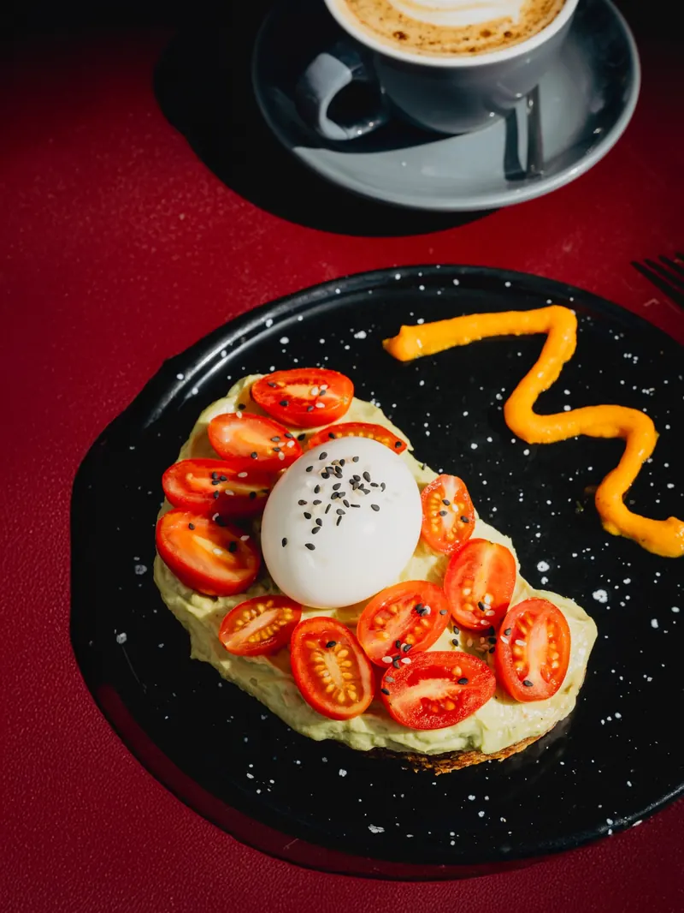
Una carta sin TACC de verdad: brunch, sándwiches, pizzas y picadas aptas.
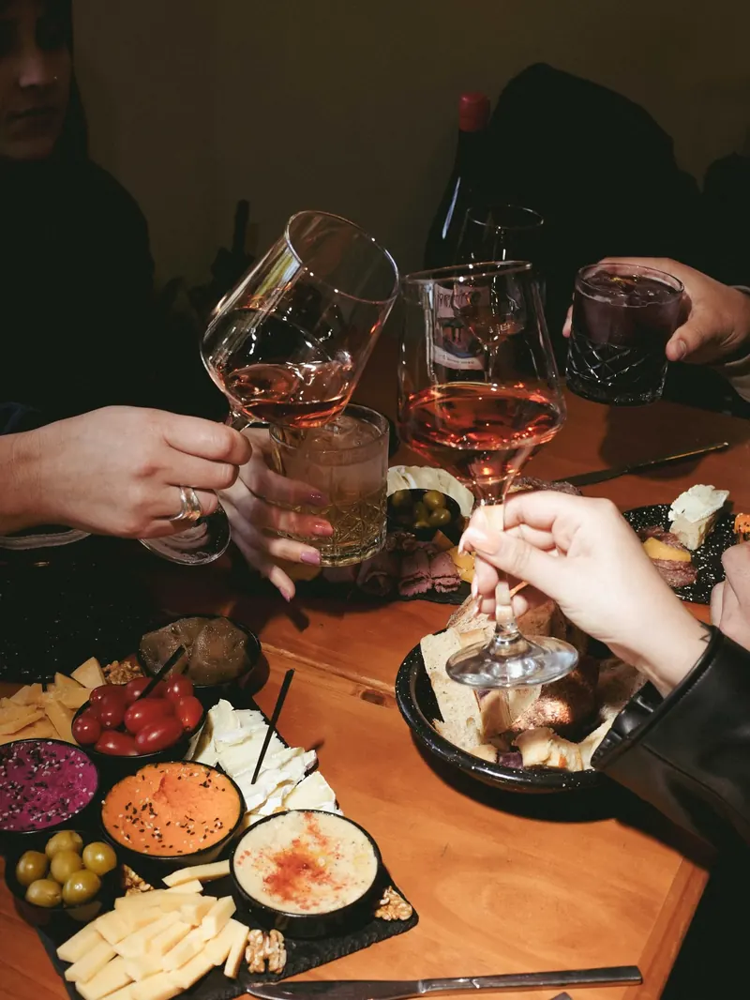
Vinos naturales, tragos de autor y pizza napolitana hasta la 1:30.
Para mirar o para llevar
Día, noche y sin TACC en un solo lugar. Lo que dice para llevar lo pedís acá y lo pasás a buscar.
Para elegir el vino de la noche
¿No sabés qué vino pedir? Mové la garra con el dedo, tocá Bajar y que decida la máquina.
Arrastrá la garra o usá las flechas.
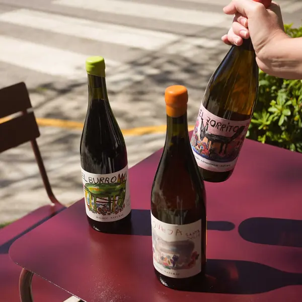
Te tocó
Botella · vino natural
$28.000
Lo que pasa en Border
Talleres, tarot y cenas con vino que se llenan en días. Las próximas fechas salen en Instagram: pedí tu lugar por DM y te avisan primero.
Taller creativo · 20:30
Pintás tu propia totebag (o abanico) con guía de @sofiabril.rb y @sonii_lucia. Incluye materiales, picada de fiambres y quesos y un trago.
Noche · 20:30
Cartas, un trago a elección y picada premium, con @pamela_rolla. La energía la ponés vos.
Cena · 21:00
Menú de 3 pasos y vinos copa por copa con @muydevinos.clubdevir. Sepas o no de vinos.
Taller · viernes
Una excusa para pintar y pasarla bien: algo rico para tomar, algo para picar y los materiales. No hace falta saber.
¿Festejás algo?
Pedí una mesa larga para tu grupo y contanos qué festejan en el comentario.
Los de siempre
Tirá la foto a un costado para ver la que sigue.
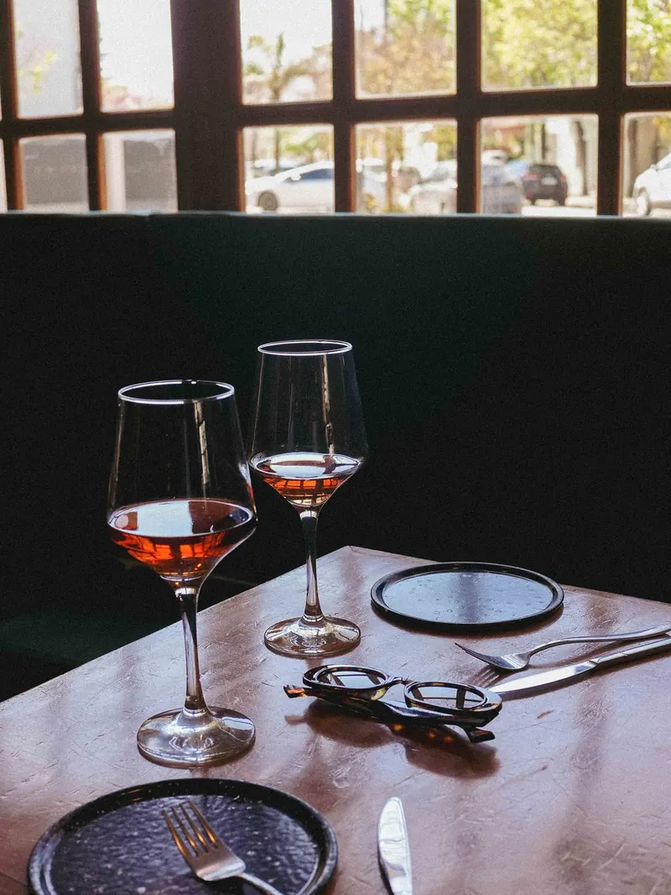
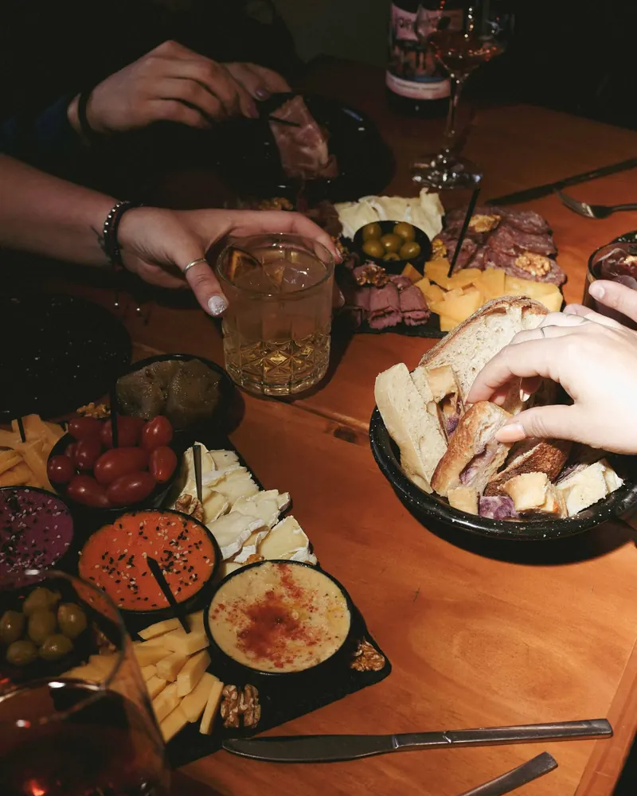
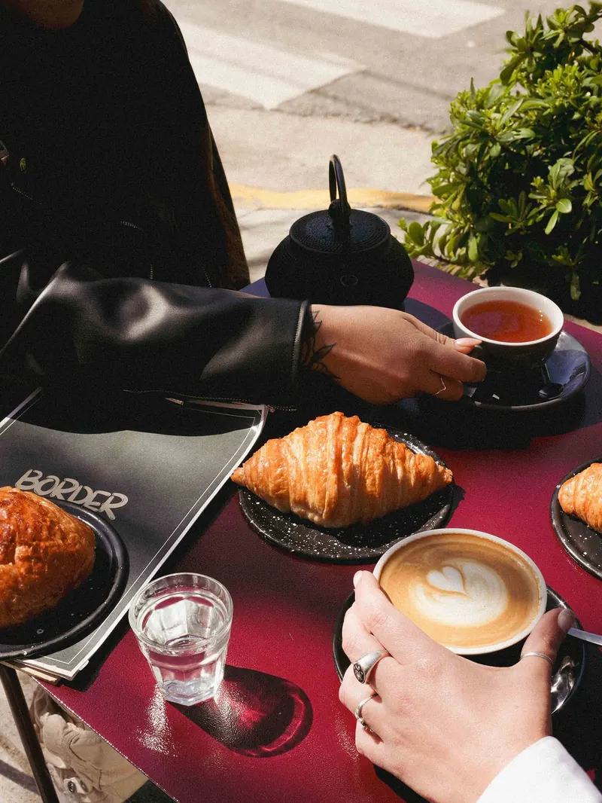
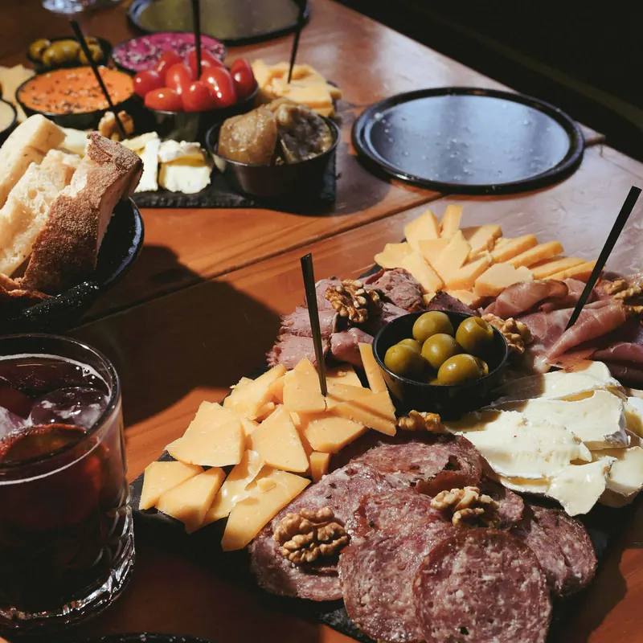
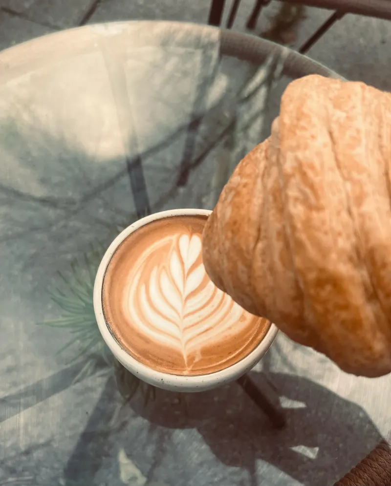
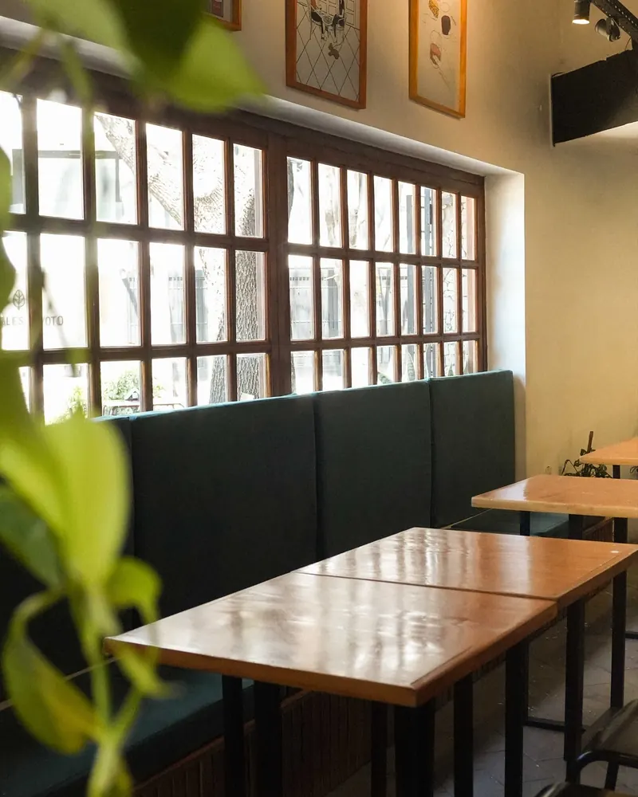
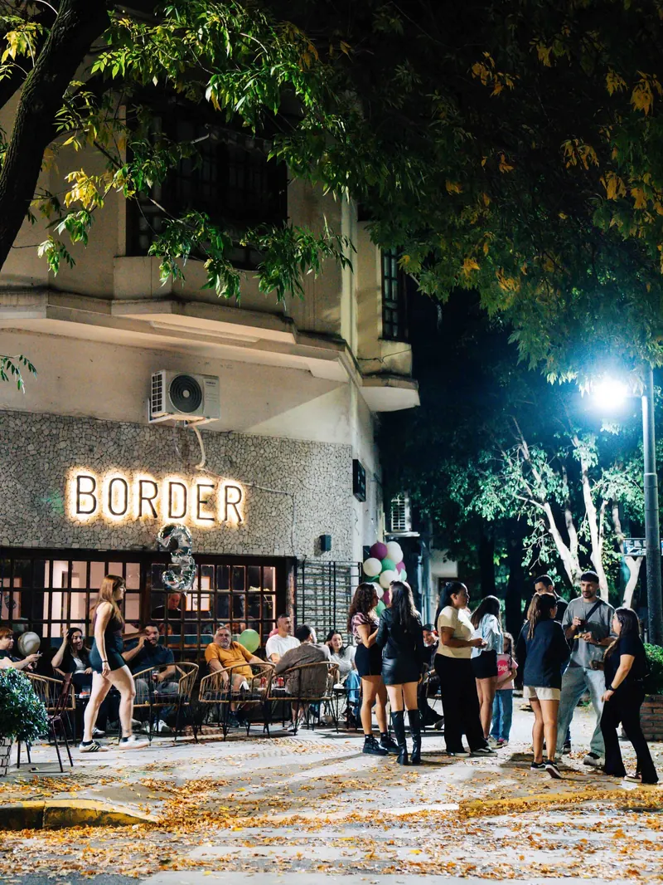
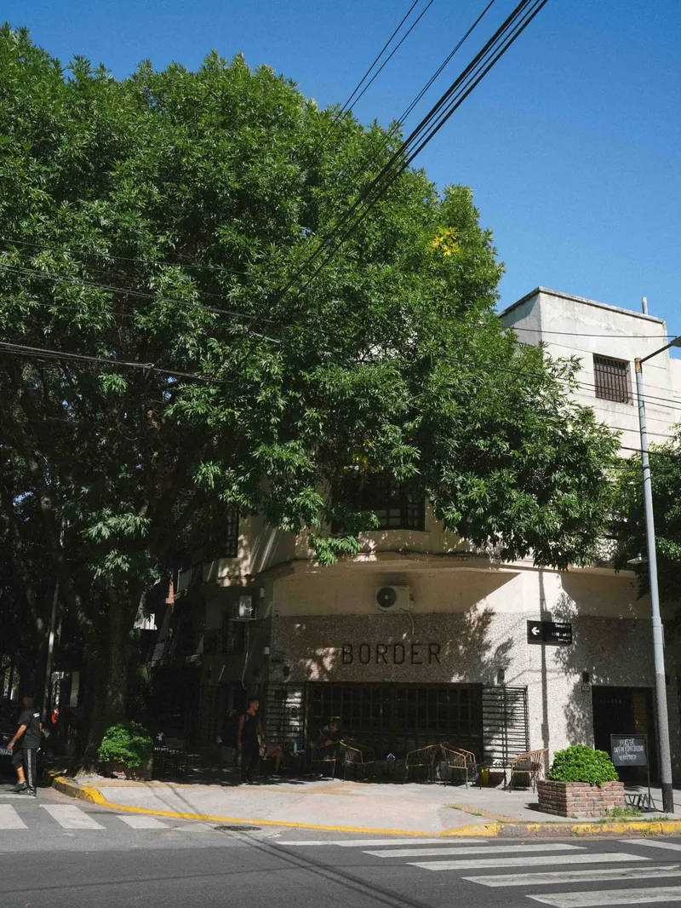
Sanabria 4302, esquina Habana